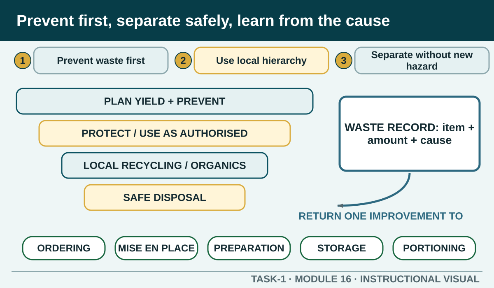

Prevent and separate kitchen waste, record its real cause and use an honest reflection to improve the next authorised practical without claiming an assessor decision.
Learning intention
What success looks like
Names the real waste, stage and an evidence-based cause
Explains the authorised separation or safety control
Names one observable prevention action
Does not claim competence or invent an observation
Core ideas
Build the complete picture
1
Prevent waste before production begins
2
Use the local waste hierarchy and streams
3
Separate waste without creating a new hazard
4
Record what was wasted and why
Visual explanation
Prevent first, separate safely, learn from the cause

A descending hierarchy begins with Plan yield and prevent, then authorised protection or use, followed by local recycling or organics and safe disposal. A feedback arrow from the waste record identifies cause and returns one action to Ordering, Mise en place, Preparation, Storage or Portioning.
Worked example
Turn the cause into an observable improvement
A useful reflection connects the observed waste to a cause within the task. Excess trim may point to technique or specification; surplus portions may point to yield calculation; discarded ingredients may point to poor storage, sequence or communication. Confirm the cause rather than assuming one event explains everything.
Observed evidence: After a fictional practical, usable trim and packaging are mixed in one container, and protected leftover ingredients show that more preparation occurred than the workflow needed. Decision and reason: The learner decides the problem began in planning and station setup, not only at disposal. Safe action: They follow the teacher-confirmed waste streams, separate material only where it is safe to do so and discuss how later preparation could be staged to demand. Result: The close-down is controlled and the next plan targets the source of avoidable waste. Next check or record: The learner records the wasted item, observed cause, authorised action and next-stage improvement without turning the reflection into a competence claim.
Question the room
Which reflection is most useful after an authorised practical?
Everything went well and I am now competent.
I moved the waste container after it blocked the clean work path; movement improved, and next time I will place it during setup.
I recorded every check as passed even though some were not completed.
Apply
Sandwich production and waste sequence
Brief: prepare four consistent ready-to-eat salad sandwiches using the teacher-authorised recipe. The exact ingredients, quantities and local presentation standard remain in that recipe.
Order all nine stages.
Check the sequence.
Name one waste-prevention decision and one food-safety control that must operate together.
Exit ticket
Action · evidence · next step
Write a Task 1 waste reflection based on an authorised practical or teacher-approved scenario. Identify what waste occurred, the stage and likely evidenced cause, the control used and one specific prevention action for next time.
One action I would take
The evidence I would check
The person or source I would confirm with
My next improvement
1 of 8
Speaker notes and delivery prompts
Open with this purpose: Prevent and separate kitchen waste, record its real cause and use an honest reflection to improve the next authorised practical without claiming an assessor decision.
Use Prevent waste before production begins to connect prior learning to the first observable workplace decision.
Model Turn the cause into an observable improvement by walking through this supplied example: Observed evidence: After a fictional practical, usable trim and packaging are mixed in one container, and protected leftover ingredients show that more preparation occurred than the workflow needed. Decision and reason: The learner decides the problem began in planning and station setup, not only at disposal. Safe action: They follow the teacher-confirmed waste streams, separate material only where it is safe to do so and discuss how later preparation could be staged to demand. Result: The close-down is controlled and the next plan targets the source of avoidable waste. Next check or record: The learner records the wasted item, observed cause, authorised action and next-stage improvement without turning the reflection into a competence claim.
Ask: Which reflection is most useful after an authorised practical? Confirm the strongest response as I moved the waste container after it blocked the clean work path; movement improved, and next time I will place it during setup..
Listen for this misconception: This is too broad and makes an assessor decision without specific evidence.
Move into Sandwich production and waste sequence, then collect the saved response and finish with the source boundary: Authorised source note: Source basis: authorised Cycle 1 food-waste, disposal, composting and recycling learning, signed TAS and site-wide evidence boundaries. Local waste streams, reuse decisions, records and formal assessment requirements remain Teacher to confirm.